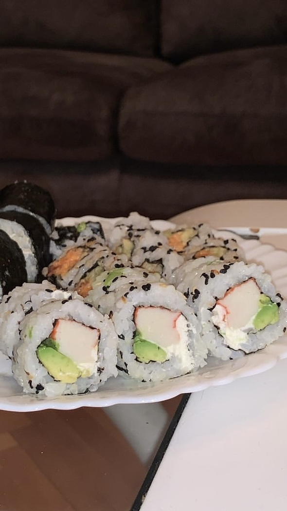

Како го поминувам слободното време?
Во моето слободно време сакам да се опуштам, да бидам креативна и да уживам во работи кои ме исполнуваат. Еве неколку од моите омилени хобија:
-
Патувања
Обожавам да откривам нови места, да се среќавам со различни култури и да запознавам нови луѓе.
Сакам да патувам со мојата фамилија и моето друштво, бидејќи заедно создаваме убави спомени, уживаме во новите места и се поддржуваме во авантурите.
Некои од моите патувања се: Србија, Грција, Чешка, Австрија, Словачка, Турција, Унгарија, Словенија и Бугарија.
.jpeg)
.jpeg)
.jpeg)
-
Готвење и љубов кон азиската култура
Готвењето ми е навистина посебно хоби. Сакам да експериментирам со нови рецепти и вкусови, особено од азиската кујна. Инспирирана сум од нивната храна, традиции и култура – од суши и рамен, до кинески специјалитети и зачини. Готвењето ме релаксира, а споделувањето со блиските ме прави среќна.
 -
Спорт
Многу сакам да спортувам. Редовно одам во теретана каде што работам на себе, ја одржувам кондицијата и се чувствувам енергично. Од време на време играм и одбојка со пријателите – тоа ми е омилен тимски спорт бидејќи ја поттикнува соработката и дружењето.